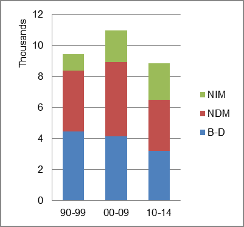

The foreign-born (FB) population increased from 14,650 in 1960 to 71,868 in 2010. That was an increase of 390.6 percent. The foreign-born share changed from 3.3 percent to 8.0 percent.
The share of the overall population that was native-born (NB) increased by 91.4 percent.
Delaware: Population 1960-2010
The first chart below shows the three population change factors for three periods adjusted for annual average amounts. Domestic migration (NDM) was the primary factor in adding population for all periods.
The second chart shows the same data but with an adjustment to reflect births to immigrants shifted to NIM. In it, NIM became the largest contributor to population increase in the most recent period.
Delaware: Sources of Population Change 1990-2014 Delaware: Sources of Population Change (Adjusted) 1990-2014 
B-D NDM NIM B-D NDM NIM 90-'99 47.2% 41.8% 11.0% 90-'99 38.5% 41.8% 19.7% 00-'09 37.8% 43.8% 18.4% 00-'09 25.6% 43.8% 30.5% 10-'14 36.1% 37.4% 26.4% 10-'14 19.3% 37.4% 43.3%